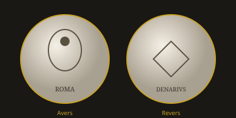

Romulus & Quirinus sur les Médailles
Le fondateur de Rome et sa divinisation — éclairés par les monnaies de la famille Memmia

Contexte historique
Selon la tradition romaine, Romulus fonda la Ville en 753 av. J.-C. (année 1 de l’ère de Rome). Frère jumeau de Rémus, fils de Mars et de Rhéa Silvia, il donna à Rome ses premières institutions : le Sénat des cent Pères, les curies, les tribus, et institua les cultes les plus anciens, notamment les Lupercalia et les fêtes de Cérès. Après sa disparition mystérieuse (ou son assassinat selon certaines versions), il fut divinisé sous le nom de Quirinus, dieu des Quirites, et honoré sur le Quirinal.
Les historiens anciens — Tite-Live, Plutarque, Denys d’Halicarnasse — rapportent ces récits avec des variantes. Les monnaies républicaines, frappées plusieurs siècles plus tard par des familles qui se réclamaient de lui, constituent un témoignage iconographique précieux : elles fixent l’image que les Romains se faisaient de leur fondateur et des cultes qu’il avait instaurés.
La famille Memmia et la légende de Romulus
La gens Memmia prétendait descendre de Romulus. Au Ier siècle av. J.-C., ses monétaires firent graver sur leurs deniers le portrait du fondateur divinisé, associant ainsi prestige ancestral et propagande politique. Ces frappes s’inscrivent dans la tradition des « monnaies de familles » (ou monnaies consulaires), où chaque gens mettait en scène ses origines mythiques ou ses exploits.
Médaille de la famille Memmia — Planche I, N° 1 (d’après Schulz)
Avers : Tête barbue de Romulus-Quirinus, coiffée de la couronne de laurier, tournée à droite. Légende à droite : C·MEMMI·C·F (Caius Memmius Caii filius) ; à gauche : QUIRINUS.
Revers : Cérès assise à gauche, tenant trois épis de blé de la main gauche et un rouet (ou une torche selon les variantes) de la droite ; un serpent à ses pieds. Légende : MEMMIUS·AED·CERIALIA·PREIMUS·FECIT (« Memmius édile, le premier, a célébré les Céréalia »).
Métal / module : Denier d’argent. Type restitué sous Trajan (émission de restauration des vieux types républicains).
Ce que la médaille éclaire
1. L’identification Romulus = Quirinus. En inscrivant explicitement QUIRINUS à côté du portrait, le monétaire confirme l’équivalence entre le fondateur historique (ou légendaire) et le dieu Quirinus. Cette divinisation est au cœur de la religion romaine archaïque.
2. Les Céréalia. La légende du revers rappelle que les jeux et fêtes de Cérès comptaient parmi les plus anciens de Rome. Romulus est traditionnellement associé à l’introduction de cultes agraires ; la présence de Cérès, des épis et du serpent (symbole chthonien de fertilité) relie le fondateur à la prospérité de la terre.
3. Le prestige des Memmii. En se rattachant à Romulus, la famille Memmia s’inscrivait dans la plus haute noblesse d’origine. À l’époque tardive de la République, de telles revendications généalogiques servaient la carrière des magistrats et monétaires.
Autres types liés à Romulus
D’autres monnaies évoquent le cycle de la fondation : la louve allaitant les jumeaux (type célèbre repris sous de nombreux règnes), la fosse du mundus, ou encore des scènes de l’enlèvement des Sabines (famille Tituria). Ensemble, elles forment un corpus iconographique qui complète et parfois corrige le récit des annalistes.
Sous l’Empire, Auguste et ses successeurs réutilisèrent l’image de Romulus pour légitimer le pouvoir impérial : le princeps se présentait comme un nouveau fondateur, garant de la pax et des institutions.
Intérêt numismatique et historique
Les deniers Memmia au type de Quirinus sont recherchés tant pour leur rareté relative que pour la clarté de leur message idéologique. Ils illustrent parfaitement la méthode de Jean-Louis Schulz : partir de la médaille pour « éclaircir » l’histoire, en confrontant l’image monétaire au texte des historiens.
Pour le collectionneur et l’historien, ces pièces rappellent que la mémoire de Romulus n’était pas figée dans les livres : elle circulait dans les bourses, sur les marchés, et participait à la construction quotidienne de l’identité romaine.
Source principale : Jean-Louis Schulz, Histoire romaine, éclaircie par les médailles (1783), section sur les rois et les monnaies de familles. Complété par la tradition annalistique (Tite-Live I, Plutarque, Vie de Romulus).